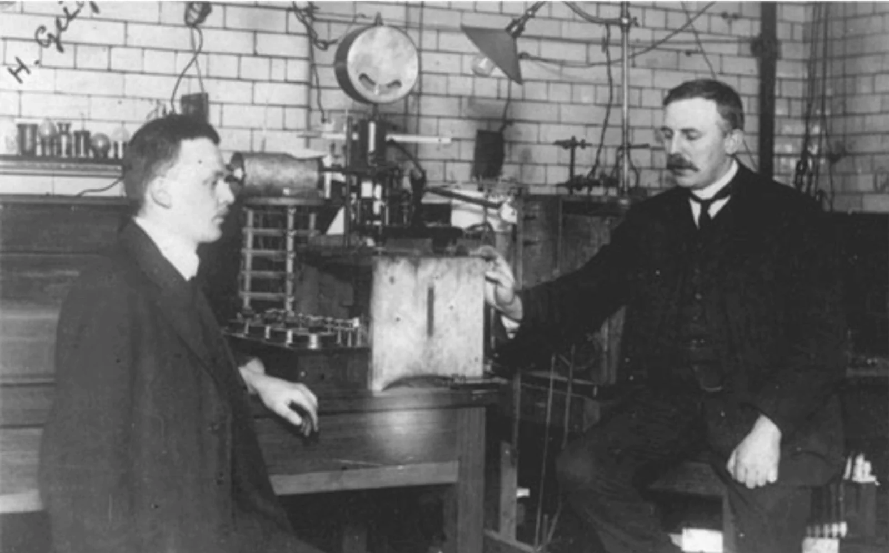
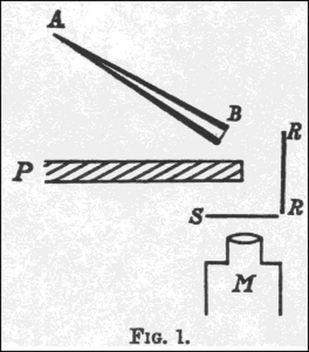
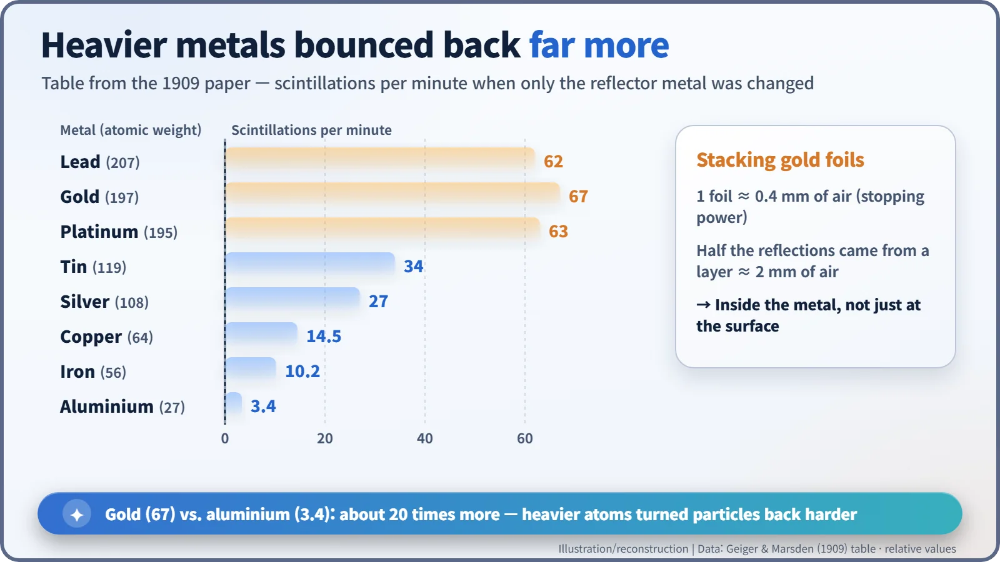
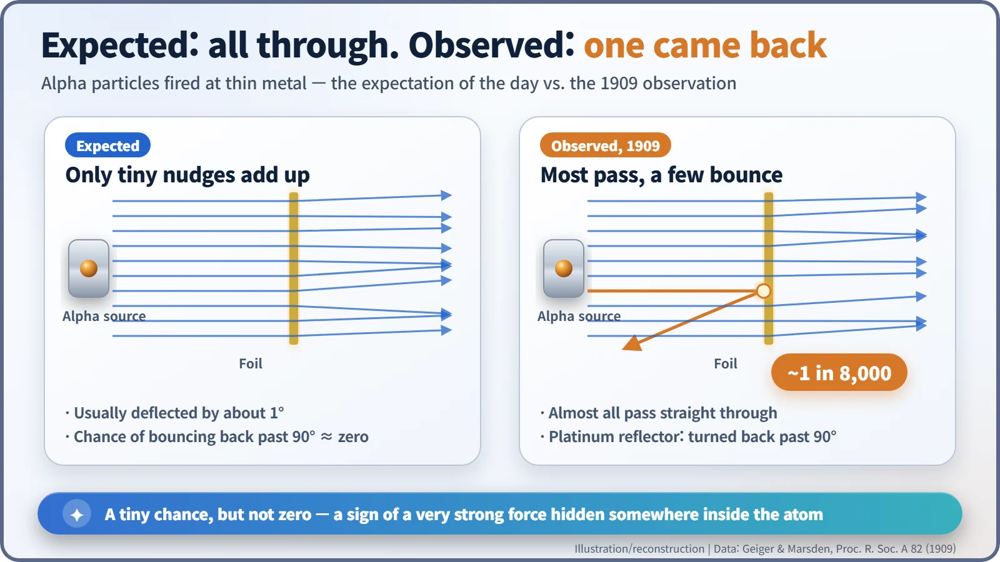
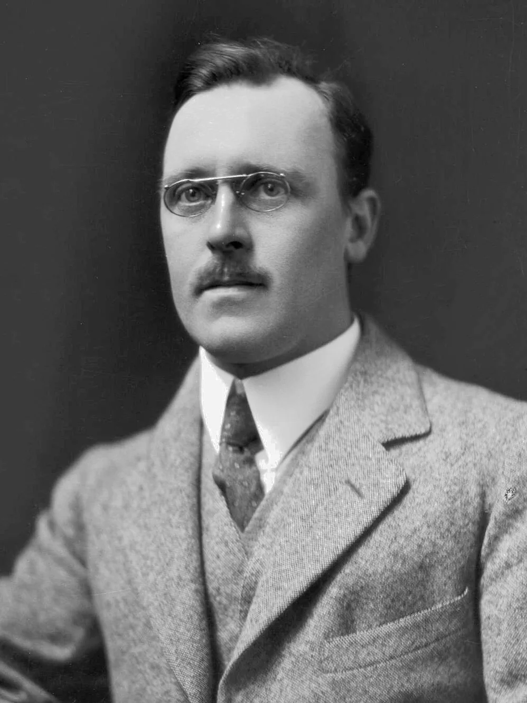

Nuclear History · 021
A Shell Bouncing Off Tissue Paper — The Geiger–Marsden Gold Foil Experiment (1909)
A student's practice task in Rutherford's Manchester lab turned up alpha particles bouncing back from metal, and the number 1 in 8,000 would not go away.
In 1909, in Ernest Rutherford's Manchester laboratory, Hans Geiger and the 20-year-old student Ernest Marsden found that a few alpha particles fired at metal bounced straight back. About 1 in 8,000 of the particles striking a platinum reflector were turned back by more than 90 degrees, something the accepted picture of the atom said should practically never happen. Explaining it would lead, two years later, to the atomic nucleus.
One in 8,000
As odds go, one in 8,000 is nothing special. Yet in 1909 that number, counted by eye in a darkened laboratory in Manchester, England, shook the way people pictured the atom. The people behind it were the German physicist Hans Geiger (1882–1945), a 20-year-old undergraduate named Ernest Marsden (1889–1970), and their professor, Ernest Rutherford (1871–1937).

A probe made of alpha particles
Rutherford arrived at the University of Manchester as professor of physics in 1907. He wanted to use the alpha particles shot out by radioactive substances as a probe to feel around inside atoms. An alpha particle, which we now know is a helium nucleus, is about 7,300 times heavier than an electron, and it travels very fast. Conveniently, Geiger was refining ways to count these particles one at a time. When an alpha particle hits a screen coated with zinc sulphide, it makes a tiny flash of light, a scintillation. The method was to sit in a dark room, peer at the screen through a microscope and tally the flashes one by one: eye-straining, patience-testing work. [4] [5]
The most widely accepted picture of the atom at the time was J. J. Thomson's: positive electricity spread evenly through the whole atom, with electrons embedded in it. In an atom as "thin" as that, a heavy alpha particle should sail almost straight through. And indeed, when Geiger fired them through thin metal foils, the particles were usually deflected by only about one degree. [2]
"Why not let him see…?"
According to Rutherford's own recollection in a 1936 lecture, Geiger came to him one day and asked: "Don't you think that young Marsden, whom I am training in radioactive methods, ought to begin a small research?" Rutherford replied: "Why not let him see if any α-particles can be scattered through a large angle?" And he added: "I may tell you in confidence that I did not believe that they would be." It was closer to a training exercise than a bold hunt for the unknown. [2]
Marsden's set-up was simple and clever. A thick lead plate sat between the glass tube that released the alpha particles and the screen, so no particle could reach the screen directly. A metal plate was placed off to the side. If the screen flashed at all, it could only be from particles that had hit the metal and come back.

And the screen flashed.
Surprise, measured in numbers
On 19 May 1909 the two sent their paper, "On a Diffuse Reflection of the α-Particles", to the Royal Society; it was read on 17 June. We call it the "gold foil experiment", but they actually tested eight metals: lead, gold, platinum, tin, silver, copper, iron and aluminium. The pattern was clear. Under the same conditions, gold produced 67 scintillations per minute on the screen and aluminium 3.4. The heavier the metal, the more particles it sent back. [1]
| Reflector metal | Atomic weight | Scintillations per minute |
|---|---|---|
| Lead | 207 | 62 |
| Gold | 197 | 67 |
| Platinum | 195 | 63 |
| Tin | 119 | 34 |
| Silver | 108 | 27 |
| Copper | 64 | 14.5 |
| Iron | 56 | 10.2 |
| Aluminium | 27 | 3.4 |

They also stacked gold foils one at a time. Each foil had the stopping power of about 0.4 mm of air. As the stack grew, the reflection grew and then levelled off; about half the reflected particles came back from a layer equivalent to roughly 2 mm of air. The bouncing was happening inside the metal, not just at its surface. Finally, they made three separate measurements of how many of the particles striking a platinum reflector came back. Their answer: "about 1 in 8000". [1]

Why was 1 in 8,000 such a big deal? In Thomson's atom, turning an alpha particle back by more than 90 degrees would require countless tiny nudges all pushing in the same direction, a chance that is, for all practical purposes, zero. No matter how many sheets of tissue paper you stack, they will not throw a cannonball back at you.
The shell, the tissue paper, and the unfinished business
Years later Rutherford described the moment in words that have been quoted ever since: "It was quite the most incredible event that has ever happened to me in my life. It was almost as incredible as if you fired a 15-inch shell at a piece of tissue paper and it came back and hit you." He was, however, speaking 27 years after the fact, and some historians think he already half-suspected that large-angle scattering might show up. [2] [5]
The 1909 paper offers no explanation. What turned the particles back was left as an open question. Rutherford's answer, a tiny, heavy centre at the heart of the atom, came in 1911, and in 1913 Geiger and Marsden confirmed his calculations with more precise measurements. That story continues with the discovery of the atomic nucleus.

In 1915, on Rutherford's recommendation, Marsden became a professor in Wellington, New Zealand, and went on to lead science administration there. In 1928 Geiger and his student Walther Müller built the counting tube we now call the Geiger counter. The lasting lesson is simple: a result that began as a student's practice task, a mere 1 in 8,000, was not brushed aside. [5]